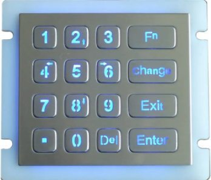

COMPONENTS

KEYPAD
The keypad is essential for smooth system interaction, allowing users to input product codes, specify quantities, and authenticate for secure access. It enhances vending machine efficiency by enabling fast and accurate transactions.